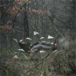
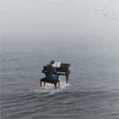
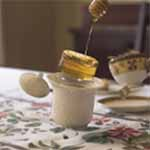
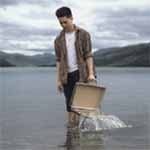
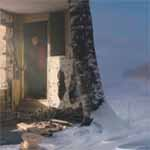
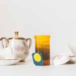

{
"UUID": "5a237e6c-add6-479a-b9db-41be45e95e51",
"Title": "Assorted surrealist photography",
"ShortDescription": "2016 through 2018",
"Year": 2018,
"FeaturedWork": "FALSE",
"URL": "assorted-surrealist-photography",
"Modality": [
"Digital"
],
"Medium": [
"Photography"
],
"Tools": [
"Digital camera",
"Lightroom",
"Photoshop"
],
"Object": [
"Digital image"
],
"Collaborators": [],
"Keywords": [
"Culture",
"Geography",
"Self",
"Sustainability",
"Technology"
]
}Collection of surrealist photography ranging from 2016 to 2018 in date.
| * | Title | Size (bytes) | View |
|---|---|---|---|
| Small World | 109,734 | ||
 | Callow Hallucinations | 129,625 | |
 | Choose to Ignore | 84,848 | |
 | Dulcet | 113,945 | |
 | Monday Morning | 106,916 | |
 | Opposite Day | 115,364 | |
 | Tea Time | 90,669 |